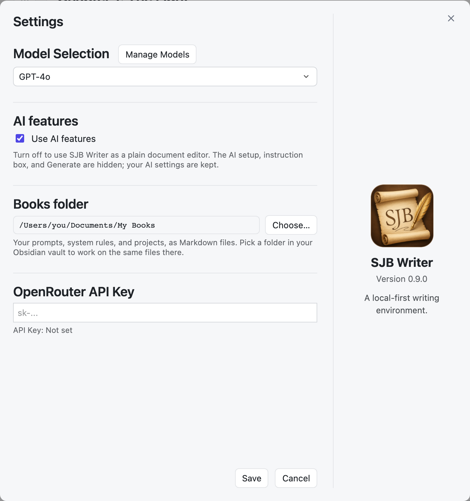
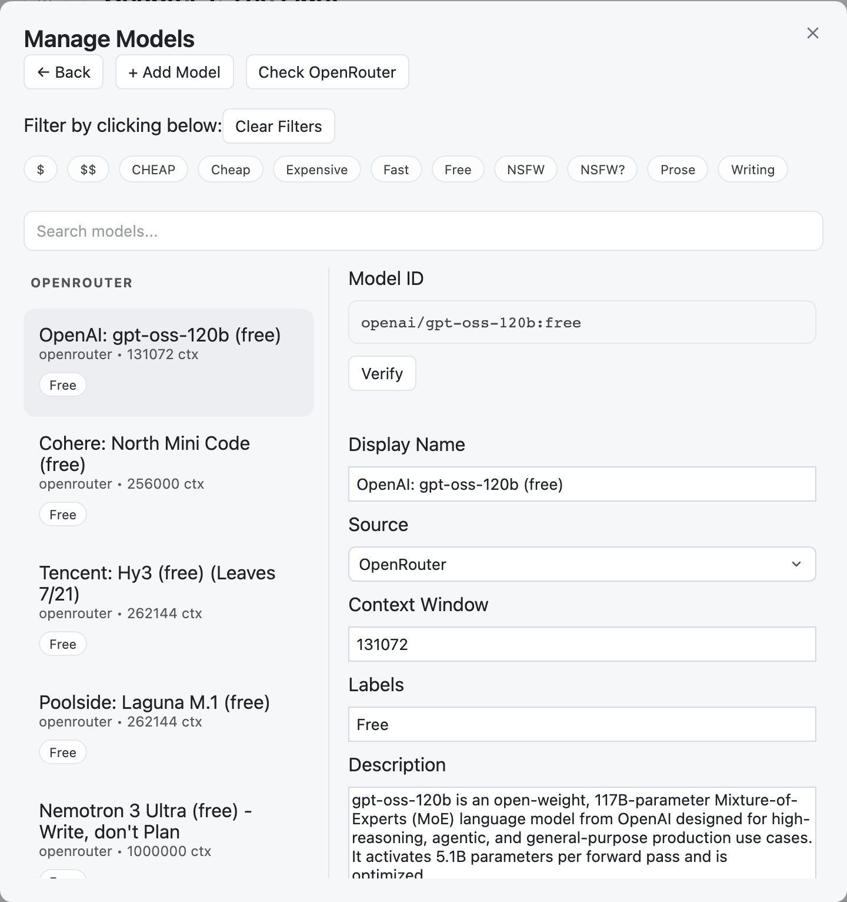

Models and settings
Connect an AI model, and find every setting in one window.
The Settings window
Click the gear in the top bar.

- Model Selection: the model to use, and Manage Models.
- AI features: turn all AI on or off.
- Books folder: where your books are saved. See Your files.
- OpenRouter API Key: your key for online models.
Click Save to keep model, AI, and key changes. The Books folder changes at once, after it asks you.
Online models with OpenRouter
- Create an account at openrouter.ai and add credit if you want paid models. Many models are free.
- Create an API key and copy it.
- Paste it into Settings → OpenRouter API Key and click Save.
The key stays on your computer, in Global/config.json.
Models on your Mac with Ollama
Install Ollama and download a model. SJB Writer finds the models on your Mac by itself. They are free, and your text never leaves your computer. Web search is not available for them.
Manage Models
Settings → Manage Models keeps your list of models tidy.

- + Add Model: paste a Model ID from OpenRouter (for example
openai/gpt-4.1) and click Verify to fill in its details. - For each model: a display name, the source, the context window, labels, and a description.
- Click a label at the top to show only those models, or search by name.
- Check OpenRouter marks models that OpenRouter has removed or will remove soon, with the date.